Turbulence¶
Abstract classes¶
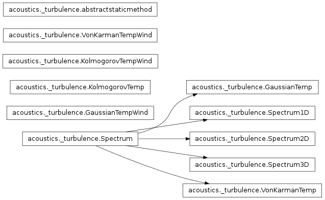
This file contains all abstract base classes related to atmospheric turbulence.
- class acoustics._turbulence.GaussianTemp(*args, **kwargs)[source]¶
Bases: acoustics._turbulence.Spectrum
Abstract class for Gaussian spectrum when only temperature fluctuations are considered.
- a = None¶
Characteristic length
 .
.
- static correlation_function(r, a, mu_0)[source]¶
Correlation function 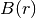.
Parameters: - r –

- a –
- mu_0 –

The correlation function is given by
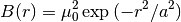
See Salomons, equation I.28.
- r –
- mu_0 = None¶
The standard deviation of the refractive-index fluctuation
 is .
is .
- class acoustics._turbulence.GaussianTempWind[source]¶
Bases: object
Abstract class for Gaussian spectrum when both temperature and wind fluctuations are considered.
- a = None¶
Characteristic length
.
 .
.- class acoustics._turbulence.KolmogorovTemp[source]¶
Bases: object
Abstract class for Kolmogorov spectrum when only temperature fluctuations are considered.

- class acoustics._turbulence.KolmogorovTempWind[source]¶
Bases: object
Abstract class for Kolmogorov spectrum when both temperature and wind fluctuations are considered.
- class acoustics._turbulence.Spectrum(*args, **kwargs)[source]¶
Bases: object
Abstract turbulence spectrum.
- max_mode_order = None¶
Maximum amount of modes to consider.
- static spectral_density_function()[source]¶
The spectral density function that is used in this model.
- wavenumber_resolution = None¶
Wavenumber resolution
- class acoustics._turbulence.Spectrum1D(*args, **kwargs)[source]¶
Bases: acoustics._turbulence.Spectrum
Abstract class for one-dimensional turbulence spectra.
- NDIM = 1¶
Amount of dimensions.
- class acoustics._turbulence.Spectrum2D(*args, **kwargs)[source]¶
Bases: acoustics._turbulence.Spectrum
Abstract class for two-dimensional turbulence spectra.
- NDIM = 2¶
Amount of dimensions.
- mode_amplitude()[source]¶
Mode amplitudes 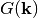.
Return type: A n-dimensional array where n is equal to the amount of dimensions of k_n. The mode amplitudes are calculating using
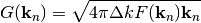
where 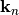 are the wavenumber, 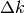 the wavenumber resolution, and
 the spectral density.
the spectral density.See Salomons, below equation J.24.
- class acoustics._turbulence.Spectrum3D(*args, **kwargs)[source]¶
Bases: acoustics._turbulence.Spectrum
Abstract class for one-dimensional turbulence spectra.
- NDIM = 3¶
Amount of dimensions.
- class acoustics._turbulence.VonKarmanTemp(*args, **kwargs)[source]¶
Bases: acoustics._turbulence.Spectrum
Abstract class for Von Karman spectrum when only temperature fluctuations are considered.
- a = None¶
Characteristic length
.
- static correlation_function(r, a, mu_0)[source]¶
Correlation function .
Parameters: - r –
- a –
- mu_0 –
The correlation function is given by
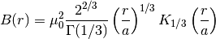
See Salomons, equation I.39.
- r –
- mu_0 = None¶
The standard deviation of the refractive-index fluctuation
is .
Turbulence¶
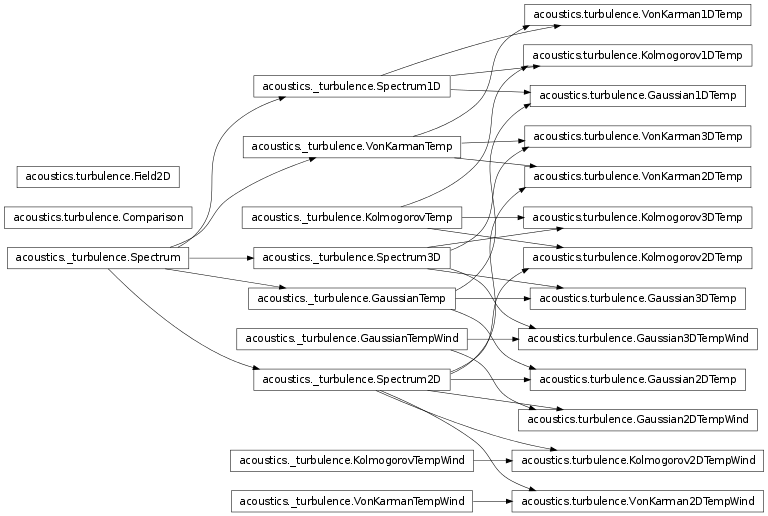
Turbulence in the atmosphere affects wave propagation. This module contains implementations of models that can be used to create random turbulence fields.
References are made to the book ‘Computational Atmospheric Acoustics’ by ‘Erik M. Salomons’, published in 2001.
- class acoustics.turbulence.Comparison(items)[source]¶
Bases: object
Compare turbulence spectra.
- items = None¶
Turbulence spectra.
- class acoustics.turbulence.Field2D(x, y, z, spatial_resolution, spectrum)[source]¶
Bases: object
Refractive index field.
- mu = None¶
Refractive index.
- spatial_resolution = None¶
Spatial resolution.
- spectrum = None¶
Spectrum.
- x = None¶
Size of field in x-direction.
- y = None¶
Size of field in y-direction.
- z = None¶
Size of field in z-direction.
- class acoustics.turbulence.Gaussian1DTemp(*args, **kwargs)[source]¶
Bases: acoustics._turbulence.GaussianTemp, acoustics._turbulence.Spectrum1D
One-dimensional Gaussian turbulence spectrum supporting temperature fluctuations.
- class acoustics.turbulence.Gaussian2DTemp(*args, **kwargs)[source]¶
Bases: acoustics._turbulence.GaussianTemp, acoustics._turbulence.Spectrum2D
Two-dimensional Gaussian turbulence spectrum supporting temperature fluctuations.
- class acoustics.turbulence.Gaussian2DTempWind(*args, **kwargs)[source]¶
Bases: acoustics._turbulence.GaussianTempWind, acoustics._turbulence.Spectrum2D
Two-dimensional Gaussian turbulence spectrum supporting temperature and wind fluctuations.
- static spectral_density_function(k, theta, plane, a, sigma_T, T_0, sigma_mu, c_0)[source]¶
Two-dimensional spectral density function .
Parameters: - k –

- plane – Tuple indicating which planes to consider.
The spectral density is calculated according to
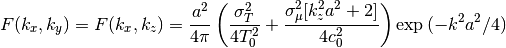
or
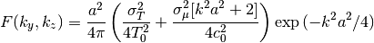
depending on the chosen plane.
See Salomons, page 215, and equation I.49 and I.50.
- k –
- class acoustics.turbulence.Gaussian3DTemp(*args, **kwargs)[source]¶
Bases: acoustics._turbulence.GaussianTemp, acoustics._turbulence.Spectrum3D
Three-dimensional Gaussian turbulence spectrum supporting temperature fluctuations.
- class acoustics.turbulence.Gaussian3DTempWind(*args, **kwargs)[source]¶
Bases: acoustics._turbulence.GaussianTempWind, acoustics._turbulence.Spectrum3D
Three-dimensional Von Karman turbulence spectrum supporting temperature and wind fluctiations.
- class acoustics.turbulence.Kolmogorov1DTemp(*args, **kwargs)[source]¶
Bases: acoustics._turbulence.KolmogorovTemp, acoustics._turbulence.Spectrum1D
One-dimensional Kolmogorov turbulence spectrum supporting temperature fluctuations.
- class acoustics.turbulence.Kolmogorov2DTemp(*args, **kwargs)[source]¶
Bases: acoustics._turbulence.KolmogorovTemp, acoustics._turbulence.Spectrum2D
Two-dimensional Kolmogorov turbulence spectrum supporting temperature fluctuations.
- class acoustics.turbulence.Kolmogorov2DTempWind(*args, **kwargs)[source]¶
Bases: acoustics._turbulence.KolmogorovTempWind, acoustics._turbulence.Spectrum2D
Two-dimensional Kolmogorov turbulence spectrum support temperature and wind fluctuations.
- class acoustics.turbulence.Kolmogorov3DTemp(*args, **kwargs)[source]¶
Bases: acoustics._turbulence.KolmogorovTemp, acoustics._turbulence.Spectrum3D
Three-dimensional Kolmogorov turbulence spectrum supporting temperature fluctuations.
- class acoustics.turbulence.VonKarman1DTemp(*args, **kwargs)[source]¶
Bases: acoustics._turbulence.VonKarmanTemp, acoustics._turbulence.Spectrum1D
One-dimensional Von Karman turbulence spectrum supporting temperature fluctuations.

- class acoustics.turbulence.VonKarman2DTemp(*args, **kwargs)[source]¶
Bases: acoustics._turbulence.VonKarmanTemp, acoustics._turbulence.Spectrum2D
Two-dimensional Von Karman turbulence spectrum supporting temperature fluctuations.
- class acoustics.turbulence.VonKarman2DTempWind(*args, **kwargs)[source]¶
Bases: acoustics._turbulence.VonKarmanTempWind, acoustics._turbulence.Spectrum2D
Two-dimensional Von Karman turbulence spectrum supporting temperature and wind fluctuations.


- class acoustics.turbulence.VonKarman3DTemp(*args, **kwargs)[source]¶
Bases: acoustics._turbulence.VonKarmanTemp, acoustics._turbulence.Spectrum3D
Three-dimensional Von Karman turbulence spectrum supporting temperature fluctuations.